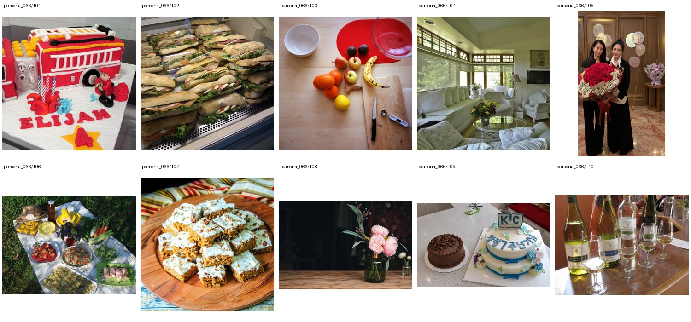

Minh-Anh的十图围绕餐点样板、蛋糕、花艺和接待区展开，另有朋友活动照与野餐摆台。工作只作弱选图依据；房间、儿童蛋糕和商业蛋糕均是讨论过的样板，不据此虚构住宅或孩子姓名。
Catering sales manager at a waterfront hotel · Bachelor's degree in Hospitality Management · 未提供数值年龄；按职业与教育背景推定为成年人
Minh-Anh spends her workdays walking couples through banquet menus, calming nervous brides, and making sure the dessert table photographs well before anyone takes a bite. At home, she is a new mom who saves play-based toddler activity ideas, watches Mexican telenovelas after bedtime, and starts most mornings with a short devotional centered on Jesus. She loves polished outfit inspiration, volume-boosting hair tutorials, and cake decorating videos, even though she insists she is better at selling cakes than piping them. Her oddly specific talent is remembering the floor plans of every hotel ballroom she has ever worked in.
Add 1 · Attribute Modification 7 · Replace 4 · Background 4 · Remove 2 · Retouch 1 · Restyle 1 · Move 1
上层v3表达个性化编辑请求，底层列出操作、个性化参数及具体解析。125项global均不绑定题材或具体图片，由请求选择；人物基本信息、非global知识和图片保持不变。历史版本仅存internal；长期日常历史尚未构建。
整组图片与基础人物信息（已清理、统一字段）

{
"source": {
"dataset": "bowen-upenn/PersonaMem-v3",
"revision": "7b00a090b35b7293e6efeeb19494207f32b5a9ee",
"source_persona_id": "113",
"path": "backend/113/profile.json",
"raw_sha256": "7b488842fb7ffdcd6e007324aceafde966dd171e5ff778adbf443b2e3f55d455"
},
"basic_profile": {
"name": "Minh-Anh Giang",
"age": null,
"gender": "cisgender female, heterosexual",
"nationality": null,
"languages": [],
"location": {
"city": null,
"region": null,
"country": null,
"description": null
},
"education": {
"degrees": [
"Bachelor's degree in Hospitality Management"
],
"fields": [],
"institutions": []
},
"occupation": {
"title": "Catering sales manager at a waterfront hotel",
"organization": null,
"industry": null,
"status": null
},
"relationship_status": null,
"summary": null,
"biography": "Minh-Anh spends her workdays walking couples through banquet menus, calming nervous brides, and making sure the dessert table photographs well before anyone takes a bite. At home, she is a new mom who saves play-based toddler activity ideas, watches Mexican telenovelas after bedtime, and starts most mornings with a short devotional centered on Jesus. She loves polished outfit inspiration, volume-boosting hair tutorials, and cake decorating videos, even though she insists she is better at selling cakes than piping them. Her oddly specific talent is remembering the floor plans of every hotel ballroom she has ever worked in.",
"hobbies": [],
"personality": {
"traits": [],
"values": [],
"quirks": [],
"big_five": {
"openness": "low",
"conscientiousness": "medium",
"extraversion": "high",
"agreeableness": "high",
"neuroticism": "medium"
}
},
"additional": {
"social_connections": [
{
"friend_id": "friend_1",
"display_name": "Mai Tran",
"relationship_depth": "close",
"shared_interests": [
"local moms",
"toddler activities",
"church"
]
},
{
"friend_id": "friend_2",
"display_name": "Marisol Juarez",
"relationship_depth": "close",
"shared_interests": [
"Mexican telenovelas",
"hospitality events",
"outfit inspiration"
]
},
{
"friend_id": "friend_3",
"display_name": "My-Linh Pham",
"relationship_depth": "close",
"shared_interests": [
"cake decorating",
"beauty tutorials",
"family gatherings"
]
},
{
"friend_id": "friend_4",
"display_name": "Mai Jimenez",
"relationship_depth": "acquaintance",
"shared_interests": [
"Latino pop culture",
"creator-comment threads"
]
},
{
"friend_id": "friend_5",
"display_name": "Mateo Jasso",
"relationship_depth": "acquaintance",
"shared_interests": [
"waterfront hotel events",
"banquet menus"
]
},
{
"friend_id": "friend_6",
"display_name": "Michelle Jeong",
"relationship_depth": "acquaintance",
"shared_interests": [
"hair tutorials",
"polished outfits",
"Instagram creators"
]
},
{
"friend_id": "friend_7",
"display_name": "Micaela Jaramillo",
"relationship_depth": "acquaintance",
"shared_interests": [
"Mexican telenovelas",
"tired moms"
]
},
{
"friend_id": "friend_8",
"display_name": "Mireya Jauregui",
"relationship_depth": "distant",
"shared_interests": [
"Latino drama fans",
"public Threads"
]
},
{
"friend_id": "friend_9",
"display_name": "Madeline Le",
"relationship_depth": "distant",
"shared_interests": [
"church community",
"devotionals"
]
},
{
"friend_id": "friend_10",
"display_name": "Monica Jefferson",
"relationship_depth": "distant",
"shared_interests": [
"local moms",
"play-based activities"
]
}
]
}
},
"adult_eligibility": {
"status": "adult",
"basis": "adult_career_and_education_context",
"inferred": true,
"numeric_age_provided": false
},
"persona_id": "persona_066"
}